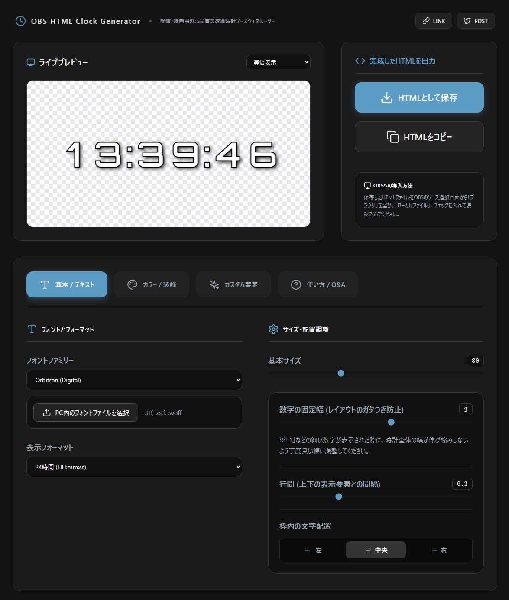
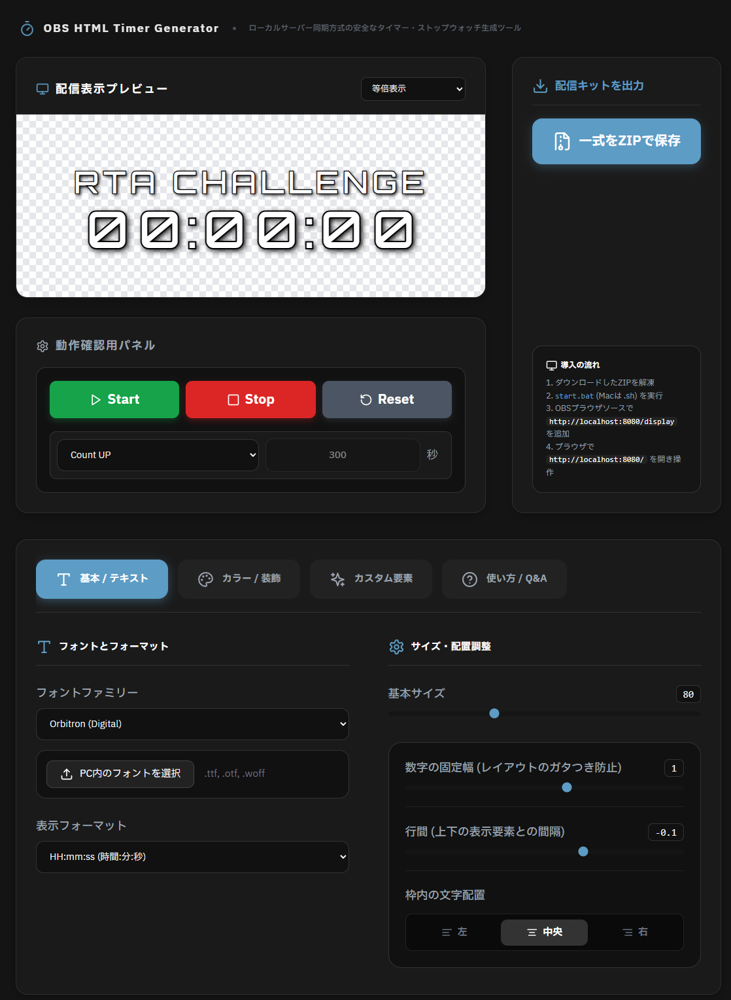
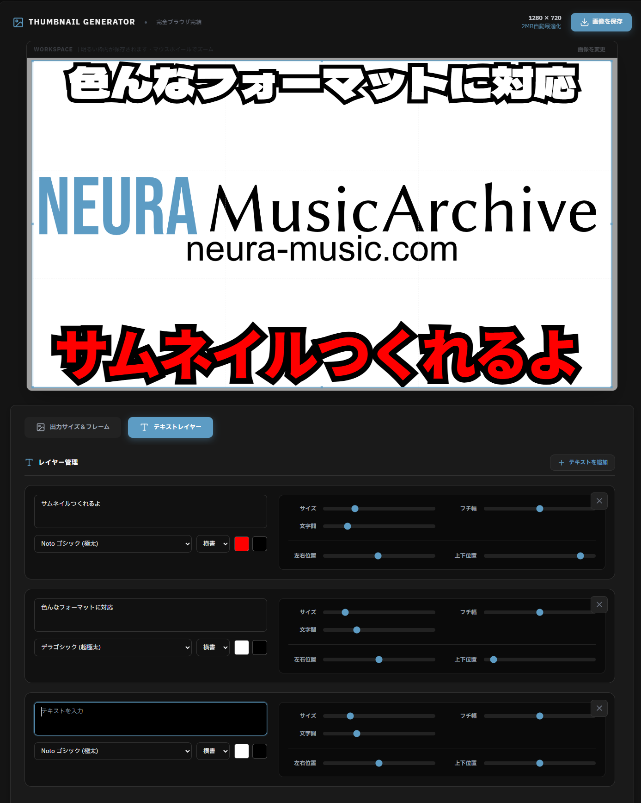

HTML Clock Generator
OBS向けに最適化された透過時計HTMLをローカルだけで生成できるツール。 固定幅・左上寄せ・ローカルフォントZIP化・影やバッジなど配信特化の機能を完備。 HTMLを保存してOBSのブラウザソースに読み込むだけで高品質な時計を使える。
当サイトは、動画クリエイターやライブ配信者のために開発された、完全無料で商用利用可能な「オリジナルAI生成BGM」と「ブラウザ完結型OBS配信ツール」の総合ポータルサイトです。全800曲以上の楽曲は、すべて当プロジェクト独自の生成AIパイプラインを用いて作成されたオリジナル音源であり、クレジット表記や利用報告なしで安全にご利用いただけます。また、配信画面を彩るOBSツール群は、セキュリティと低負荷を最優先に設計。すべての処理がブラウザ（ユーザーのローカル環境）で完結するため、機密情報を含む素材を扱う際も安心です。クリエイターの皆様が、煩雑な準備作業から解放され、本来の「制作」と「配信」に集中できる環境をサポートします。

OBS向けに最適化された透過時計HTMLをローカルだけで生成できるツール。 固定幅・左上寄せ・ローカルフォントZIP化・影やバッジなど配信特化の機能を完備。 HTMLを保存してOBSのブラウザソースに読み込むだけで高品質な時計を使える。

OBSで使える“パタパタ式ランキング発表”を、HTML1枚で動かせるリモコン分離型ツール。 ウィンドウキャプチャ＋クロマキーで透過合成し、回転速度や効果音など細かくカスタム可能。 設定はJSON保存でき、配信事故防止のためウィンドウを閉じる前に必ずOBS側を非表示にする。

OverlayGenは、配信に必要な枠・時計・SNS・テロップ・QRなどを“全部ひとつのHTML”に統合できるブラウザ完結型オーバーレイ生成ツール。 直感UIでリアルタイムプレビューしながらデザインでき、静止画だけでなく動くテロップや自動切替QRも標準搭載。 出力したHTMLをOBSのブラウザソースに読み込むだけで高品質なオーバーレイが完成し、ソース管理が劇的にシンプルになる。

NEURA Timerは、OBS上での誤クリック事故を“構造的に防ぐ”ために、操作画面と表示画面をローカルサーバーで分離したタイマー生成ツール。 ブラウザでデザインしてZIPを展開し、Node.js同期でStart/Stop/Resetを安全に連動でき、デザインも高機能で崩れない。 OBS側はローカルファイルを使わずURL指定し、カスタムCSS削除で透過を確保するのが最重要ポイント。

ブラウザに画像をドロップするだけで高品質なサムネを即生成できる完全ローカル処理ツール。 YouTube・SNS・ブログ向けの各種プリセットに合わせて、比率ロックのトリミングとテキスト合成が直感的に行える。 最終出力は2MB以下に自動最適化され、即ダウンロードまで一気に完了する。
当サイトは、ユーザーのプライバシーを尊重し、個人情報の保護に努めます。
当サイトにおいて、氏名やメールアドレス等の個人情報を直接取得・保存することはありません。
なお、サイトの閲覧に伴い、セキュリティ対策や利便性向上のため、IPアドレス等の技術的情報が自動的に送受信されますが、これらを個人を特定する目的で利用したり、永続的に保存したりすることはありません。
当サイトで提供される楽曲は、利用規約の範囲内で安全にご利用いただけます。
1. 著作権と利用許諾：提供される楽曲の著作権は制作者に帰属します。ユーザーは、非商用・商用を問わず、本楽曲を無料で利用することができます。
2. 禁止事項：楽曲の二次配布、販売、および自作発言は固く禁じます。
3. AI生成物の明示と識別情報：当サイトで公開されるすべての音源は、生成AIにより作成されたコンテンツです。EU AI法を含む各地域の法令に基づき、AI生成物であることを明示しています。また、音源にはGoogle SynthID等の識別情報が埋め込まれており、AI生成であることを確認できる仕組みが含まれています。これらの識別情報は利用者の個人情報とは無関係であり、追跡や特定を目的とするものではありません。
サービスに関するご質問やお問い合わせは、以下の連絡先までお願いいたします。
当サイトでは、サービスの安定的かつ継続的な提供を目的として、一部のページに広告を掲載しております。ユーザーの皆様のご理解とご協力をお願い申し上げます。